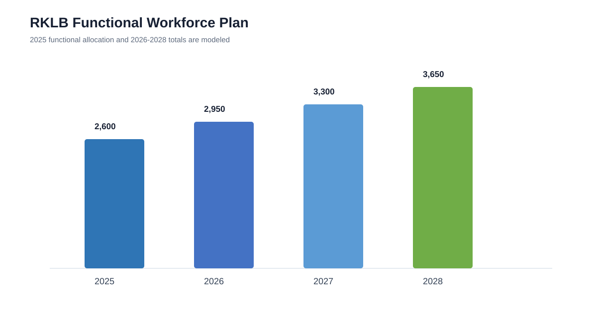
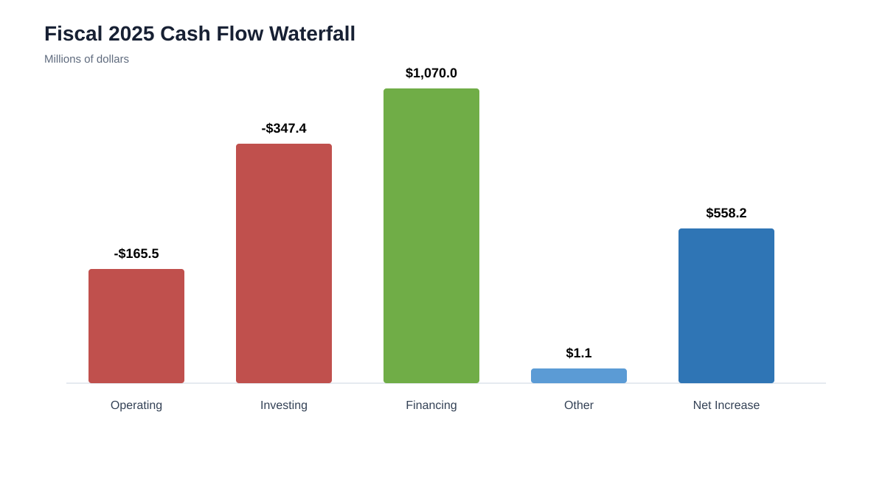
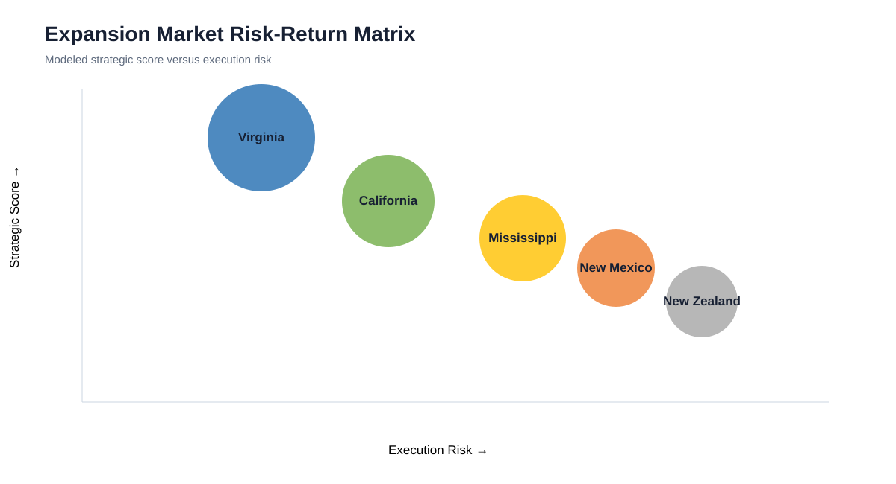
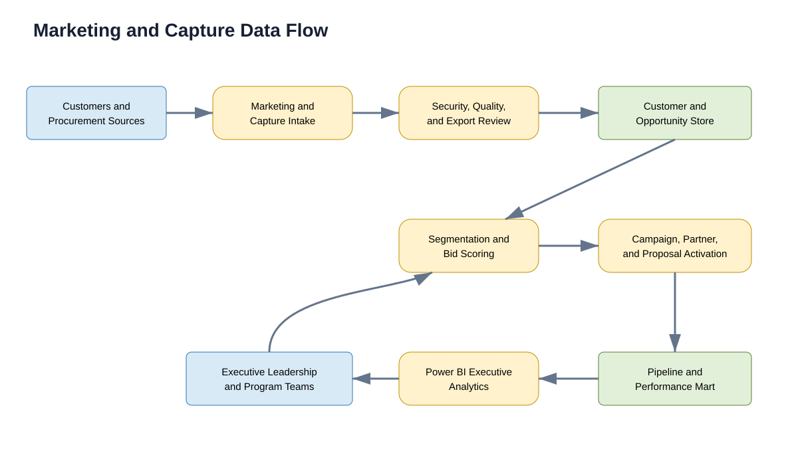

WEEK 3 · CEO DECISION ANALYSIS · JULY 2026
Rocket Lab Corporation: Decision Making at the CEO Level
A five-part business intelligence analysis of growth capacity, personnel, cash flow, domestic expansion, and the marketing data architecture required to support Rocket Lab's next stage of scale.
Growth Analysis
Rocket Lab reported total revenue of $244.6 million in 2023, $436.2 million in 2024, and $601.8 million in 2025. The 2025 result represented annual growth of approximately 38%, while gross profit increased to $207.2 million. Growth reflects a business model that no longer depends only on Electron launches. Product revenue from spacecraft and components reached $371.6 million, while service revenue reached $230.2 million (Rocket Lab Corporation, 2026).
The capacity decision must account for Electron and HASTE launch services, Space Systems manufacturing, and the Neutron production ramp. These operations depend on launch cadence, range access, engine and vehicle production, spacecraft integration, test infrastructure, and customer milestone schedules.
The modeled scenario assumes revenue rises to $760 million in 2026, $950 million in 2027, and $1.18 billion in 2028. Demand remains above modeled productive capacity, indicating that delayed expansion could constrain launches or spacecraft deliveries. Capacity should be released in phases based on signed backlog, launch readiness, component availability, production yield, and customer funding.
Wallops Island should receive priority because Rocket Lab already operates Launch Complex 2 there and is developing Launch Complex 3 for Neutron. Mahia should remain the high-cadence Electron platform while Virginia supports Neutron and selected United States missions.
Personnel Analysis
Rocket Lab reported more than 2,600 full-time permanent employees at the end of 2025, compared with approximately 1,400 employees at the end of 2022. This increase reflects acquisitions, launch growth, Space Systems expansion, and Neutron development (Rocket Lab Corporation, 2026).
A broad layoff strategy would conflict with the company's technical and contractual requirements. Propulsion engineering, avionics, flight software, mission assurance, security, classified-program management, quality engineering, and launch leadership should remain core permanent capabilities.
The modeled workforce grows to 2,950 employees in 2026, 3,300 in 2027, and 3,650 in 2028. Hiring should be linked to funded backlog, production milestones, and facility readiness rather than general growth expectations.
Workforce dashboards should monitor vacancy duration, utilization, overtime, turnover, certification coverage, safety incidents, and program schedule variance. Temporary labor, additional shifts, and cross-training can absorb short production peaks without permanently overbuilding headcount.

Cash Flow Analysis
Rocket Lab used $165.5 million of cash in operating activities during 2025. Investing activities used $347.4 million, while financing activities provided approximately $1.07 billion. The resulting net increase in cash, cash equivalents, and restricted cash was $558.2 million (Rocket Lab Corporation, 2026).
The cash-flow structure shows that current expansion is not self-funded from operations. External equity supported infrastructure, acquisition activity, and operating losses. Financial backing should be obtained when a project is tied to funded backlog, creates durable launch or manufacturing capacity, and preserves a protected liquidity reserve.
Capital releases for Neutron and Virginia should be milestone based. Recommended gates include facility completion, engine qualification, stage testing, launch-site readiness, customer deposits, and independent schedule review.
The primary dashboard measures should include operating cash burn, capital expenditures, unrestricted cash, funded backlog, contract liabilities, monthly program burn, remaining cost to first launch, and financing dilution.

Expansion Recommendation
The recommended domestic expansion location is Wallops Island, Virginia. Rocket Lab already operates Launch Complex 2 at NASA's Wallops Flight Facility and is constructing Launch Complex 3 for Neutron. The location directly connects the company's largest new vehicle to United States civil, defense, and commercial demand.
The modeled site comparison ranks Virginia above New Mexico, California, New Zealand, and Mississippi. Virginia receives the highest strategic score because it combines launch-site access, government customer proximity, responsive-space value, and existing infrastructure.
The recommendation does not concentrate every function in Virginia. California should remain central to engineering and integration, Mississippi should support engine testing, Albuquerque should continue supporting solar and component production, and Mahia should remain essential to Electron.
Later phases should pause when launch readiness slips beyond the approved tolerance, projected utilization falls below 70%, or the remaining capital requirement exceeds the risk-adjusted value of contracted demand.

Marketing Data Flow Diagram
Rocket Lab's United States marketing and capture system must support commercial launch customers, civil agencies, defense programs, satellite operators, and spacecraft customers. The proposed data flow begins with customer requirements, procurement notices, partner information, launch-market signals, and regulatory changes.
Marketing and capture intake records mission needs, payload class, schedule, orbit, security requirements, spacecraft requirements, budget range, and contracting path. Data quality, security, and export-control controls validate the information before it enters the customer and opportunity data store.
Segmentation and bid scoring evaluate strategic fit, probability of award, technical readiness, margin, schedule feasibility, and capacity requirements. Qualified opportunities move to campaign, partner, and proposal activation.
Power BI executive analytics combines opportunity, program, capacity, and financial data. Leadership receives pipeline forecasts, bid/no-bid recommendations, customer concentration measures, and capacity alerts. Award and loss outcomes return to the scoring process, creating a closed feedback loop.

References
- Microsoft. (n.d.). Power BI documentation. https://learn.microsoft.com/power-bi/
- Rocket Lab Corporation. (2026). Annual report for the fiscal year ended December 31, 2025. U.S. Securities and Exchange Commission. https://www.sec.gov/Archives/edgar/data/1819994/000181999426000013/rklb-20251231.htm
- Rocket Lab Corporation. (2026, February 26). Rocket Lab announces fourth quarter and full year 2025 financial results. https://investors.rocketlabcorp.com/news-releases/news-release-details/rocket-lab-announces-fourth-quarter-and-full-year-2025-financial